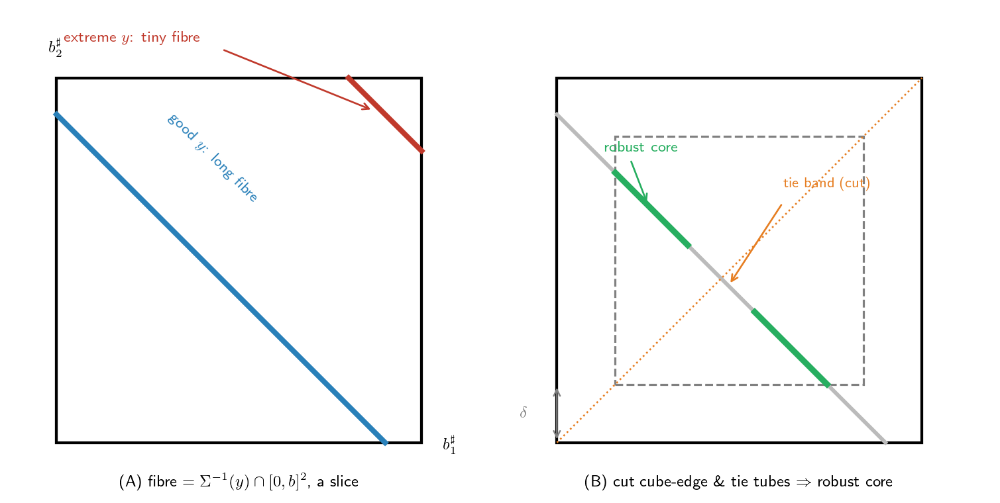

연구 ▷ HST ▷ Lemma 17 (iii) 하나만 천천히 — robust fibre floor
한 줄: (iii)은 “fall 적립만으로 어떤 목표든 부피가 양수인 한 묶음의 방법으로 맞힐 수 있다”를 보이는 단계다. 핵심은 목표가 도달 가능 영역 안쪽에 있어야 하고, 그 묶음에서 위험한 가장자리를 잘라낸 robust 코어도 여전히 양의 부피를 남긴다는 것.
H. Lemma 17 (iii), 다른 단계랑 떼어놓고 보면 도대체 뭘 하는 거야?
G. 한 문장으로: “fall 적립만으로, 출발 높이차에서 원하는 목적지 높이차까지 가는 적립 조합이 — 점 하나가 아니라 — 부피가 양수인 한 덩어리로 존재한다.” 그 덩어리의 부피에 양수 바닥(floor)을 까는 게 (iii)의 전부야. 용어가 빽빽하니 하나씩 풀자.
왜 “점 하나”가 아니라 “덩어리”라야 하냐부터 — 나중에 그 덩어리 위에서 밀도를 적분해 확률 \(\eta\)를 만들거든. 점 하나는 부피 0이라 적분하면 0 → 확률 0. 덩어리(양의 부피)라야 양수 확률이 나와.
H. “fall”, “적립”, “적립 조합”부터. 뭐가 뭐야?
G. 차례로:
- fall — HST에서 매 시각 \(t\)의 스텝은 둘 중 하나야: fall(눈이 새 타겟 노드에 떨어지는 스텝, \(\boldsymbol{\mu}_0\) 추첨) 또는 non-fall(flow·block). 한 window에 fall이 \(nL\)개 있어. fall을 “주역”이라 부르는 건 높이차를 원하는 값으로 끌고 가는 게 fall들이기 때문이야 (non-fall은 작은 노이즈).
- 적립 \(b^{\sharp}_j\) — \(j\)번째 fall이 그 노드에 쌓는 눈의 양. 그냥 숫자 하나, \([0,b]\) 범위.
- 적립 조합 \(\mathbf{b}^{\sharp}\) — \(nL\)개 적립을 묶은 벡터 \(\mathbf{b}^{\sharp} = (b^{\sharp}_1,\ldots,b^{\sharp}_{nL}) \in [0,b]^{nL}\). 아래 그림에선 (fall 2개라) 정사각형 \([0,b]^2\) 안의 한 점.
H. 그럼 “목표 \(y\)”가 뭐야? 이게 제일 헷갈려.
G. \(y\)는 목적지가 아니라, fall들이 만들어내야 할 “높이차 이동량”이야. 셋을 구분하면 깔끔해 (\(n=2\)라 높이차가 숫자 하나인 경우로):
- 출발 \(\Delta_1\mathbf{h}(s)\) — 지금 상태 \(s\)의 높이차. 예: \(h(v_2)-h(v_1) = 0.3\).
- 목적지 \(u\) — 도달하고 싶은 높이차 (chamber \(U\) 안의 점, 최종 기준측도 \(\nu\)가 사는 곳). 예: \(u = 0.9\).
- 이동량 \(y\) — 출발에서 목적지까지 fall이 채워야 할 양: \[y := u - \Delta_1\mathbf{h}(s) = 0.9 - 0.3 = 0.6.\]
즉 \(y\)는 높이도 상태도 아니고, “출발과 목적지의 차이”야. (non-fall이 미리 \(R\)만큼 밀어놨으면 fall은 덜 채워도 되니 \(y = u - \Delta_1\mathbf{h}(s) - R\). 앞 단계에서 잔차 얘기한 게 이 \(R\)이야.)
H. 그래서 fall이 \(y\)를 “맞힌다”는 건?
G. 적립 조합 \(\mathbf{b}^{\sharp}\)를 선형사상 \(\Sigma\)가 높이차 변위 \(\Sigma\mathbf{b}^{\sharp}\)로 보내. 목적지에 정확히 닿으려면
\[\Delta_1\mathbf{h}(s) + \Sigma\mathbf{b}^{\sharp} = u \;\;\Longleftrightarrow\;\; \Sigma\mathbf{b}^{\sharp} = u - \Delta_1\mathbf{h}(s) = y.\]
여기서 \(\Sigma:[0,b]^{nL}\to\mathbb{R}^d\) (\(d=n-1\)). 입력 \(nL\)개, 출력 \(d\)개인데 \(nL\)이 \(d\)보다 훨씬 많아 (falls가 많으니) → \(\Sigma\)는 납작한(fat) 사상이라 \(\Sigma\mathbf{b}^{\sharp}=y\)를 푸는 적립 조합이 하나가 아니라 한 무더기야. 그 무더기가
\[\text{fibre} \;=\; [0,b]^{nL} \cap \Sigma^{-1}(y) \;=\; \{\,\mathbf{b}^{\sharp}\in[0,b]^{nL} : \Sigma\mathbf{b}^{\sharp} = y\,\}.\]
“fibre(올, 섬유)”는 그냥 이동량 \(y\)를 정확히 만드는 적립 조합들의 집합. 차원은 \(m := nL - d\) (자유도 = 입력 수 − 제약 수).
H. 너무 추상적이야. 작은 그림으로.
G. \(\Sigma\)를 합(sum)이라고 치자 (가장 단순한 fat 사상, \(d=1\)). fall 적립 두 개 \(b^{\sharp}_1, b^{\sharp}_2 \in [0,b]\), 이동량은 \(b^{\sharp}_1 + b^{\sharp}_2 = y\). 그럼 fibre는 정사각형 \([0,b]^2\)를 가로지르는 선분이야.
여기서 “점 하나 vs 덩어리”가 한눈에 보여: 만약 fall이 1개뿐이면 \(b^{\sharp}_1 = y\)라 해가 점 하나(부피 0). fall이 2개라 자유도가 남아 \(b^{\sharp}_1+b^{\sharp}_2=y\)의 해가 선분(길이 = 양의 부피)이 되는 거야.
(A)를 봐. 목표 \(y=0.9\) (파랑)면 fibre가 정사각형 한가운데를 길게 가로질러 — 길이(=\(1\)차원 부피)가 큼. 그런데 \(y\)가 극단적이면 (빨강, \(y=1.8\), 거의 모서리 \((1,1)\) 근처)? fibre가 모서리에 몰린 짧은 토막이라 부피가 거의 0. 바닥(floor)을 깔 수 없어.
→ 그래서 목표가 너무 극단적이면 안 된다. “안쪽(interior)”에 있어야 fibre가 통통하지.
H. 그 “안쪽”이 본문의 \(\operatorname{int}(L\cdot\mathcal{O})\)랑 \(K_U^\varrho\) 얘기야?
G. 맞아. \(L\cdot\mathcal{O}\) = \(L\)바퀴 falls가 만들 수 있는 변위들의 영역. 그 내부(interior)에 목표가 있어야 fibre가 통통하다는 게 보조정리(pushforward density \(\geq b^{1-n}/2\) on \(\mathcal{O}\) + convolution lower bound)가 보장하는 바야.
근데 우리 목표는 그냥 \(y\)가 아니라 residual만큼 밀린 \(y = u - \Delta_1\mathbf{h}(s) - \mathbf{r}\)이거든 (flow·block이 남긴 잔차 \(\mathbf{r}\)). 그래서 본문은 밀린 목표 전부를 한 집합으로 묶어:
\[K_U^\varrho := \{\,u - \Delta_1\mathbf{h}(s) - \mathbf{r} \;:\; u\in U,\ s\in C_0,\ \|\mathbf{r}\|_\infty \leq Lb/8\,\}.\]
이게 통째로 \(\operatorname{int}(L\cdot\mathcal{O})\) 안에 (컴팩트하게) 들어가야 해 — 기호로 \(K_U^\varrho \Subset \operatorname{int}(L\cdot\mathcal{O})\). \(L \geq 16M_0/b + 1\)로 \(L\)을 키우면 \(L\cdot\mathcal{O}\)가 충분히 커져서 잔차 반경 \(Lb/8\)까지 품을 방이 생겨.
반례로 왜 \(L\)을 키워야 하나: \(L\)이 작으면 \(L\cdot\mathcal{O}\)가 좁아서, 출발 높이차 \(\Delta_1\mathbf{h}(s)\) (최대 \(M_0\) 규모)만으로도 목표가 영역 밖으로 튀어나가 — fibre가 쪼그라들어 floor가 0. \(L\)을 키워야 영역이 넉넉해져 안쪽에 안전하게 들어가.
H. 좋아, 목표가 안쪽이면 fibre가 통통하다. 그럼 floor \(m_0\)은?
G. “통통하다”를 정량화한 게 floor야:
\[\mathcal{H}^m\bigl([0,b]^{nL} \cap \Sigma^{-1}(y)\bigr) \;\geq\; m_0 > 0 \qquad (\forall\, y \in K_U^\varrho).\]
\(\mathcal{H}^m\) = \(m\)차원 Hausdorff 측도 = 그냥 fibre의 \(m\)차원 부피 (\(m = nL - d\)). 위 그림이면 \(m=1\)이라 “선분의 길이”. 이게 \(K_U^\varrho\) 안 모든 \(y\)에 대해 공통 하한 \(m_0\)을 가져 — 목표마다 들쭉날쭉하지 않고 일정 바닥이 깔린다는 게 핵심 (“uniform”).
H. 여기까지가 그냥 fibre. 그럼 “robust”는 왜 또 붙어?
G. fibre 안에도 위험한 점들이 있어서야. 두 종류를 잘라내:
- cube 가장자리 (cube-boundary tube): 어떤 fall 적립 \(b^{\sharp}_j\)가 \(0\)이나 \(b\)에 너무 가까운 점. 왜 위험하냐 — 다음 단계 (iv)에서 잔차를 흡수하려고 적립을 살짝 움직이는데, 가장자리에 붙어있으면 \([0,b]\) 밖으로 튕겨나가 버려. 유효하지 않은 적립이 됨.
- tie tube (높이 비교 동점 근처): 두 노드 높이 비교가 거의 동점인 점. 살짝 건드리면 부호가 뒤집혀 walker 경로(branch)가 바뀌어 버려.
이 위험 지대를 폭 \(\delta\) 튜브로 도려낸 게 robust fibre:
\[\mathcal{R}_\delta(y,s) := [0,b]^{nL} \cap \Sigma^{-1}(y) \cap \{\delta \leq b^{\sharp}_j \leq b-\delta\ \forall j\} \cap \bigcap_{a}\{|\alpha_a\cdot\mathbf{b}^{\sharp} + \gamma_a(s)| \geq \delta\}.\]
- 그림의 초록색이 그거야 — 안쪽 정사각형 \([\delta, b-\delta]^2\) 안에 있으면서 (가장자리 마진 \(\delta\)) tie 띠(주황)도 피한 부분.
H. 도려내면 부피가 줄잖아. floor가 깨지지 않아?
G. 그게 \(\delta\)를 충분히 작게 잡는 이유야. 잘라내는 튜브들의 부피가 각각 \(\leq C\delta\) (tube-bound 보조정리)라, \(\delta\)를 작게 하면 잘리는 양을 \(m_0/2\) 이하로 누를 수 있어:
\[(C_{\rm tie} + C_{\rm bdry})\,\delta \leq m_0/2.\]
그러면 남는 robust fibre가 여전히 절반은 건짐:
\[\mathcal{H}^m\bigl(\mathcal{R}_\delta(y,s)\bigr) \;\geq\; m_* := m_0/2 > 0.\]
→ 이게 (iii)의 최종 산출물: 위험지대를 다 뺀 뒤에도 양의 부피 바닥 \(m_*\)가 남는다. 이 \(m_*\)가 나중에 밀도 floor \(c_* = m_*/(b^{nL} J(\Sigma))\)로, 결국 \(\eta\)의 한 인자가 돼.
H. 그럼 내가 아까 헤맸던 \(\varepsilon_{\rm D} \leq b/(8nT_{\max})\)랑 \(Lb/8\)은 (iii)의 어디랑 붙는 거야?
G. 두 군데로 붙어 — (iii)이 방(margin)을 만들고, \(\varepsilon_{\rm D}\)가 잔차를 그 방 안에 넣는 거야.
- 목표가 안쪽에 들도록: 잔차 \(\mathbf{r}\)이 목표를 밀어도 \(K_U^\varrho\) 안에 있어야 하니 \(\|\mathbf{r}\|_\infty \leq Lb/8\). 그래서 잔차를 그만큼 작게 만들려고 \(\varepsilon_{\rm D} \leq b/(8nT_{\max})\)를 골랐지 (\(\|R\|_\infty \leq nLT_{\max}\varepsilon_{\rm D} \leq Lb/8\)로). ← (iii)의 “안쪽” 요구와 직결.
- robust 마진 안에 들도록: (iv)에서 잔차를 흡수하며 적립을 \(\leq \delta/4\)만큼 움직이는데, robust fibre가 가장자리·tie에서 \(\delta\) 떨어져 있으니 안 튕겨나가. 이 \(\delta/4\)를 보장하려고 \(\varepsilon_{\rm D} \leq \delta/(4 C_Q B_R)\)도 같이 걸어.
즉 (iii)이 “\(\delta\)만큼 여유 있는 robust 코어”를 깔아주면, \(\varepsilon_{\rm D}\)를 그 여유보다 작게 골라 잔차가 코어를 안 벗어나게 하는 구조야. (iii) 없이는 잔차를 넣을 방 자체가 없어.
H. 한 줄 요약.
G. (iii) robust fibre floor는 “falls만으로 안쪽 목표를 맞히는 적립 덩어리(fibre)가 양의 부피를 갖고, 위험한 가장자리·tie를 \(\delta\)만큼 도려낸 robust 코어도 여전히 \(m_* = m_0/2 > 0\)의 부피를 남긴다”를 보이는 단계다. 목표가 안쪽(\(K_U^\varrho \Subset \operatorname{int}(L\cdot\mathcal{O})\))이어야 fibre가 통통하고, robust 마진 \(\delta\)가 곧 (iv)에서 잔차를 흡수할 여유 공간이 된다 — 그 여유에 잔차를 욱여넣는 게 \(\varepsilon_{\rm D} \leq b/(8nT_{\max})\)였던 것.